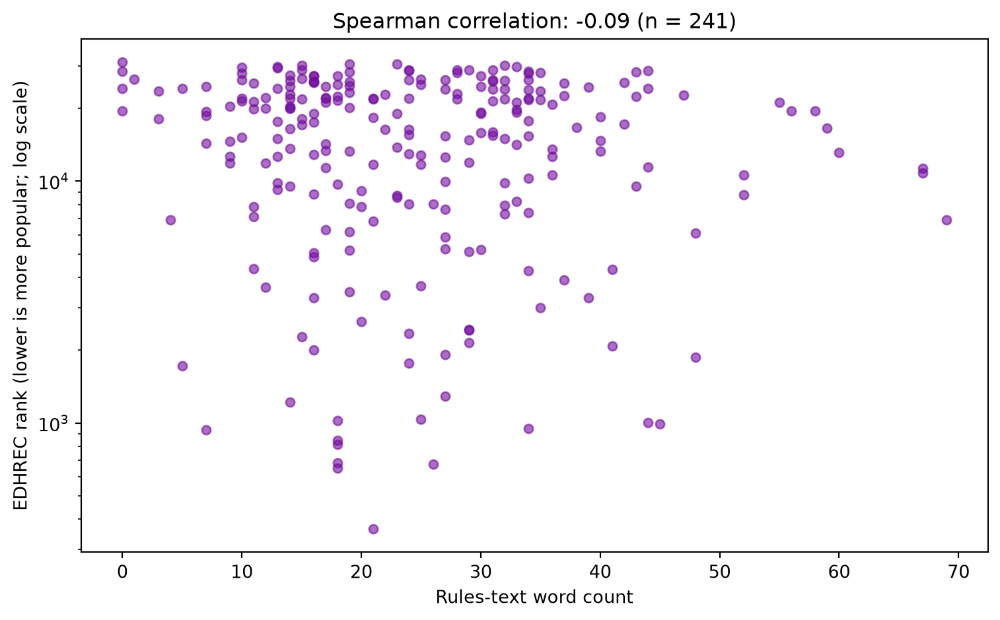
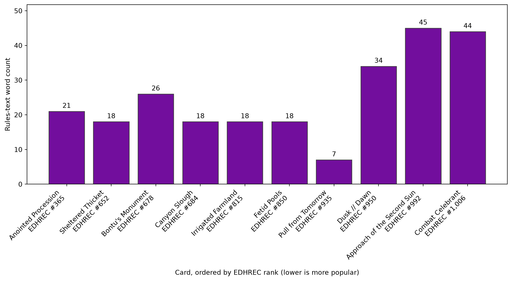

Rules-text length and lasting Commander popularity in Amonkhet.
Author
firecat1234
Published
September 22, 2026
In the R post, I compared creatures using their printed stats and mana costs. Here, I want to look at the fine print: do wordier Amonkhet cards tend to be more popular in Commander years after the set’s release?
Data: MTGJSON’s Amonkhet dataset, using the saved snapshot dated September 22, 2026, and the CSV prepared in the R post. MTGJSON publishes its data under the MIT licence.
The dataset’s EDHREC rank gives us a rough way to explore staying power. Lower ranks mean greater popularity. This is popularity in the saved snapshot, rather than a record of how each card’s popularity changed over time, and it does not measure tournament success.
All three comparisons exclude cards marked as reprints in the AKH snapshot, using MTGJSON’s isReprint field. This keeps older cards such as Evolving Wilds out of the analysis. Cards introduced in Amonkhet can still have been printed again later.
Read and prepare the cards
import pandas as pdimport matplotlib.pyplot as pltraw_cards = pd.read_csv("data/akh_cards.csv", dtype={"isReprint": "boolean"})raw_cards = raw_cards.loc[~raw_cards["isReprint"]].copy()print(f"Loaded {len(raw_cards)} non-reprint rows from the CSV.")
Loaded 256 non-reprint rows from the CSV.
Some rows are alternate printings, while split cards have separate rows for their two halves. I combine the distinct rules texts for each name before keeping one row per card. Missing text counts as zero words; missing popularity ranks stay missing.
# Keep both halves of split cards without repeating identical printing text.text_by_name = raw_cards.groupby("name")["text"].agg(lambda texts: "\n".join(texts.dropna().unique()))cards = raw_cards.drop_duplicates("name").copy()cards["text"] = cards["name"].map(text_by_name).fillna("")cards["word_count"] = cards["text"].str.split().str.len()cards["edhrecRank"] = pd.to_numeric(cards["edhrecRank"], errors="coerce")# Missing ranks and nonpositive values cannot be used on a logarithmic axis.ranked_cards = cards.loc[cards["edhrecRank"] >0].copy()cards[["name", "rarity", "word_count", "edhrecRank"]].head()
name
rarity
word_count
edhrecRank
0
Angel of Sanctions
mythic
52
8805.0
1
Anointed Procession
rare
21
365.0
2
Anointer Priest
common
44
11410.0
3
Approach of the Second Sun
rare
45
992.0
5
Binding Mummy
common
13
9243.0
How much fine print comes with each rarity?
First, I compare average text length by rarity. The word count uses whitespace to split the text, so it includes reminder text and any standalone mana symbols. It is a simple length measure, not a direct measure of how difficult a card is to play.
Figure 1: Mean rules-text word count by rarity for AKH cards not marked as reprints, counting each card once and combining the text of split-card halves.
Does longer text go with greater popularity?
For this comparison, I use only cards with a recorded positive EDHREC rank. The vertical axis uses a logarithmic scale so that ranks across a wide range remain readable. Spearman’s correlation compares the ordering of the two variables: a negative value would mean longer text tends to go with a lower rank, and therefore greater popularity. An association would not establish that longer text causes popularity.
# Pearson correlation of the ranks gives Spearman's correlation.# rank() assigns average ranks to ties, so no extra package is needed.rho = ranked_cards["word_count"].rank().corr(ranked_cards["edhrecRank"].rank())fig, ax = plt.subplots(figsize=(8, 5))ax.scatter( ranked_cards["word_count"], ranked_cards["edhrecRank"], color="#720e9d", alpha=0.6, s=25)ax.set_yscale("log")ax.set_xlabel("Rules-text word count")ax.set_ylabel("EDHREC rank (lower is more popular; log scale)")ax.set_title(f"Spearman correlation: {rho:.2f} (n = {len(ranked_cards)})")fig.tight_layout()plt.show()

Figure 2: Rules-text word count versus EDHREC rank for AKH cards not marked as reprints. Lower ranks mean greater popularity; the rank axis is logarithmic.
Which cards have stuck around?
Finally, these are the ten AKH cards with the lowest EDHREC ranks after excluding reprints. Bar height shows rules-text word count, and each card’s label includes its EDHREC rank. The cards are ordered by popularity from left to right, with lower ranks meaning greater popularity.
top_cards = ranked_cards.sort_values(["edhrecRank", "name"]).head(10)card_labels = [f"{name}\nEDHREC #{rank:,.0f}"for name, rank inzip(top_cards["name"], top_cards["edhrecRank"])]fig, ax = plt.subplots(figsize=(11, 6))bars = ax.bar(card_labels, top_cards["word_count"], color="#720e9d", edgecolor="0.25")ax.bar_label(bars, padding=3)ax.margins(y=0.15)ax.set_xlabel("Card, ordered by EDHREC rank (lower is more popular)")ax.set_ylabel("Rules-text word count")plt.setp(ax.get_xticklabels(), rotation=45, ha="right")fig.tight_layout()plt.show()

Figure 3: Rules-text length of the ten most popular AKH cards not marked as reprints. Bars show word counts; the x-axis labels give each card’s EDHREC rank.
AI assistance: ChatGPT helped draft the data preparation and plotting code.